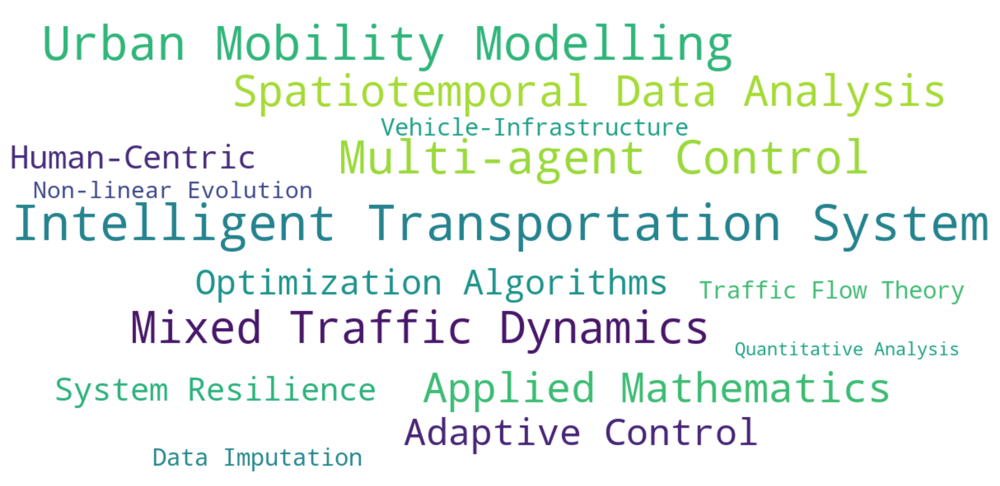
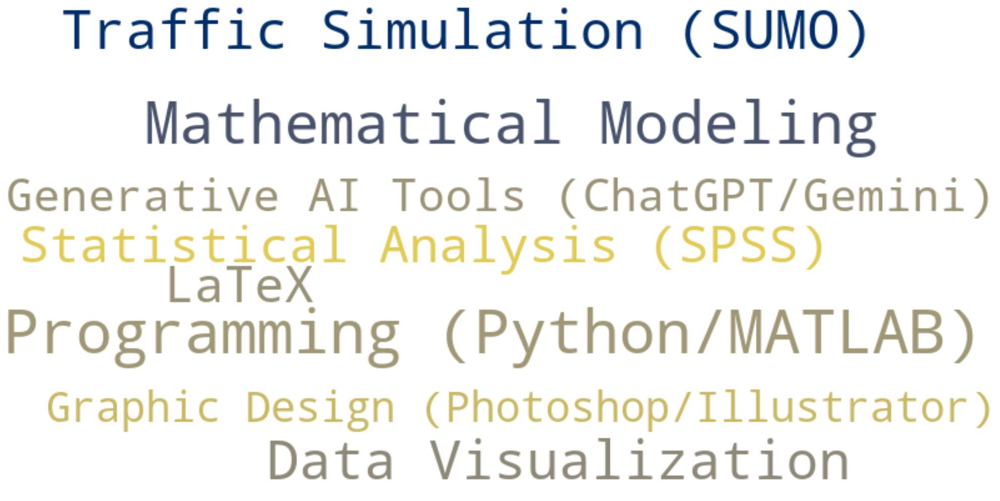

About Me
Hi, I'm Haopeng Deng, an undergraduate at Guangzhou Maritime University, passionate about Intelligent Transportation Systems. My research focuses on optimizing urban traffic flow, with a particular interest in how Connected and Autonomous Vehicles (CAVs) can reshape mobility. I’m currently working on models to integrate human-driven and autonomous vehicles, aiming to improve city traffic efficiency and safety with a human-centric approach. My goal is to leverage technology and data to create smarter, more resilient transportation systems for the future. I'm looking for MPhil/PhD opportunities starting in Fall 2026.
Interests & Skills
Research Interests
Core Skills
Publications
Accepted or Published
- Deng, H., Zheng, F., Ma, K., & Xia, X. (2025). Adaptive Truncated Schatten Norm for Traffic Data Imputation with Complex Missing Patterns. The 25th COTA International Conference of Transportation Professionals, Guangzhou, China. [DOI]
- Deng, H., Zheng, F., & Zhan, L. (2024). Application of Markov Processes in Traffic Signal Control. International Core Journal of Engineering. [DOI]
- Wang, Q., Deng, H., Deng, H., Cai, J., et al. (2025). Research on the Incentive Mechanism of a Comprehensive Carbon Pricing System for Carbon Emission Reduction and Carbon Sink Enhancement. Journal of Guangzhou Maritime University. [CNKI]
- Wang, Y., Gao, Z., & Deng, H. (2024). An Analytical Exploration of Limits and Infinitesimals. World Scientific Research Journal. Corresponding Author. [DOI]
- Wang, Y., Zhang, H., Zhou, Y., Deng, H., et al. (2025). Exploring the 2-Part of Class Groups in Quadratic Fields: Perspectives on the Cohen–Lenstra Conjectures. Mathematics. [DOI]
Manuscripts
- Wang, Y., Deng, H., Luo, Z., Li, L. Approximate Sparse Stochastic Control for Time-Varying Systems with Control-Dependent Diffusion. [Preprint]
- Wang, Y., Li, L., Deng, H., et al. (2025). Sparse Stochastic Optimal Control under Control-Dependent Diffusion and Time-Varying Dynamics. [Preprint]
Research Experiences
Guangdong Provincial Special Fund for Science and Technology Innovation Strategy (07/2024-present)
Title: Cooperative Game-Based Network Traffic Assignment Mechanisms for Enhancing Urban Transportation Efficiency
As the Project Leader, I am leading a project to enhance urban transportation efficiency through game-based network traffic assignment mechanisms. I has developed a unified VI-based Dynamic Traffic Assignment (DTA) model, capturing a continuous spectrum of user equilibrium (UE) and system optimum (SO) across two time scales. My work involved analyzing the nonlinear dynamics within a 4D control parameter space of mixed connected and human-driven vehicle networks, uncovering key bifurcation patterns and chaotic attractors. Additionally, I authored a systematic review of mixed-traffic DTA models, synthesizing insights from over 100 studies on equilibrium evolution, algorithms, and emerging trends. I also oversee task delegation, milestone tracking, and mentor junior researchers to ensure timely progress.

Guangdong Provincial College Student Innovation and Entrepreneurship Training Program (11/2024-present)
Title: Intelligent Recognition of Urban Traffic Equilibrium States under Air-Ground Collaborative Monitoring
As a core member, I contributed to developing an intelligent system for recognizing urban traffic equilibrium states, integrating data from roadside sensors, UAVs, and probe vehicles. My team aims to construct high-dimensional traffic flow tensors and explore various data loss structures, including element-wise, fiber-wise, and mixed loss, to improve data recovery algorithms. In particular, I developed an adaptive truncated Schatten norm-based model (LRTC-ATSN) that successfully completed traffic datasets with missing patterns, achieving significant improvements in accuracy and performance. Additionally, I facilitated a partnership between academia and industry for traffic survey equipment procurement and guided junior students in fieldwork to gather data for analyzing traffic flow equilibrium states.

The Hundred Thousand Talent Plan (07/2024)
Title: Investigation and Research on Traffic Safety and Planning in Kaiping City
I led a team focused on traffic safety and planning in Kaiping City. We worked closely with the Municipal Transportation Department, analyzing traffic accident and violation data to identify accident hotspots and hazard types. My team conducted on-site surveys, interviews, and drone photography to gather data on traffic flow, vehicle management, pedestrian movement, and infrastructure. I applied SPSS and LLM tools to analyze the survey and interview data, uncovering key issues and proposing actionable solutions that contributed significantly to the city's traffic safety and planning efforts. I also authored two technical reports: one that used Structural Equation Modeling to explore the relationship between traffic safety behavior and attitudes, and another assessing Kaiping's traffic governance using Grey Relational Analysis and Fuzzy Evaluation. The findings were eventually adopted by the Municipal Transportation Bureau.

Awards and Honors
- Meritorious Winner (M Award), Interdisciplinary Contest in Modeling (ICM), COMAP 2025
- Third Prize, China Undergraduate Mathematical Contest in Modeling, Guangdong Division 2024
- Second Prize, 19th College Students Transportation Science and Technology Competition 2024
- Third Prize, 18th “Challenge Cup” College Students' Extracurricular Academic Science and Technology Works Competition, Guangdong Division 2024
- Merit Scholarship, Guangzhou Maritime University 2023